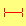

auto : 사용자 에이전트가 현재 맥락에 맞춰 표시할 커서를 결정. 예를 들어 글씨 위에서는 text를 사용합니다.
default :  플랫폼에 따라 다른 기본 커서. 보통 화살표입니다.
플랫폼에 따라 다른 기본 커서. 보통 화살표입니다.
none : 커서 없음.
context-menu :  콘텍스트 메뉴 사용 가능.
콘텍스트 메뉴 사용 가능.
help :  도움말 사용 가능.
도움말 사용 가능.
pointer :  링크를 나타내는 포인터. 보통 한 쪽을 가리키는 손입니다.
링크를 나타내는 포인터. 보통 한 쪽을 가리키는 손입니다.
progress :  프로그램이 백그라운드에서 작업 중이지만, 사용자가 인터페이스와 상호작용할 수 있음. (wait과 반대)
프로그램이 백그라운드에서 작업 중이지만, 사용자가 인터페이스와 상호작용할 수 있음. (wait과 반대)
wait :  프로그램이 작업 중이고, 사용자가 인터페이스와 상호작용할 수 없음. (progress와 반대) 간혹 모래시계나 시계모양 그림을 사용합니다.
프로그램이 작업 중이고, 사용자가 인터페이스와 상호작용할 수 없음. (progress와 반대) 간혹 모래시계나 시계모양 그림을 사용합니다.
cell :  표의 칸이나 여러 칸을 선택할 수 있음.
표의 칸이나 여러 칸을 선택할 수 있음.
crosshair :  십자 커서. 종종 비트맵 선택에 사용합니다.
십자 커서. 종종 비트맵 선택에 사용합니다.
text :  글씨 선택 가능. 보통 I빔 모양입니다.
글씨 선택 가능. 보통 I빔 모양입니다.
vertical-text :  세로쓰기 글씨 선택 가능. 보통 옆으로 누운 I빔 모양입니다.
alias : 별칭이나 바로가기를 만드는 중.
copy :  복사하는 중.
복사하는 중.
move :  움직이는 중.
움직이는 중.
no-drop :  현재 위치에 놓을 수 없음. Windows와 Mac OS X에서 no-drop은 not-allowed와 같습니다.
현재 위치에 놓을 수 없음. Windows와 Mac OS X에서 no-drop은 not-allowed와 같습니다.
grab : 잡을 수 있음. (잡아서 이동)
grabbing :  잡고 있음. (잡아서 이동)
잡고 있음. (잡아서 이동)
all-scroll :  모든 방향으로 이동 가능. (패닝) Windows에서 all-scroll은 move와 같습니다
모든 방향으로 이동 가능. (패닝) Windows에서 all-scroll은 move와 같습니다
col-resize col-resize.gif 항목/행의 크기를 좌우로 조절할 수 있음. 종종 좌우 화살표의 가운데를 세로로 분리한 모양을 사용합니다.
항목/행의 크기를 좌우로 조절할 수 있음. 종종 좌우 화살표의 가운데를 세로로 분리한 모양을 사용합니다.
row-resize row-resize.gif 항목/열의 크기를 상하로 조절할 수 있음. 종종 상하 화살표의 가운데를 가로로 분리한 모양을 사용합니다.
항목/열의 크기를 상하로 조절할 수 있음. 종종 상하 화살표의 가운데를 가로로 분리한 모양을 사용합니다.
동, 서, 남, 북 resize : 움직일 수 있는 모서리. 예를 들어, se-resize 커서는 움직임이 사각형의 동남쪽에서 시작할 때 사용합니다.
어떤 환경에선 동일한 방향의 양방향 화살표를 대신 보여줍니다. 즉 n-resize와 s-resize는 ns-resize와 같습니다.
현재 모든 브라우저에서 양방향 크기 조절 커서와 동일하게 보임.
n-resize
e-resize  s-resize
w-resize
s-resize
w-resize  ne-resize
ne-resize  nw-resize
nw-resize  se-resize
sw-resize
se-resize
sw-resize 
양방향 크기 조절 커서.
ew-resize  ns-resize
ns-resize  nesw-resize
nesw-resize  nwse-resize
nwse-resize 
IE에서는 기본 pointer 커서로 렌더링됨.
확대/축소할 수 있음.
zoom-in  zoom-out
zoom-out